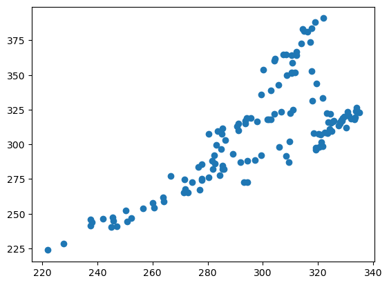

import numpy as npMetadata
Course: DS 5100
Module: 05 Numpy HW
Topic: Capital Asset Pricing Model (CAPM)
Author: R.C. Alvarado (revised)
Date: 7 July 2023Student Info
- Name:
- Net ID:
- URL of this file in GitHub:
Instructions
In your private course repo on Rivanna, use this Jupyter notebook and the provided data file capm_market_data.csv to write code that performs the tasks below.
Save your notebook in the M05 directory.
Remember to add and commit these files to your repo.
Then push your commits to your repo on GitHib.
Be sure to fill out the Student Info block above.
To submit your homework, save the notebook as a PDF and upload it to GradeScope, following the instructions.
TOTAL POINTS: 10
Overview
In finance, a capital asset pricing model (CAPM) is a single-factor regression model used to explain and predict excess stock returns.
There are better, more accurate models, but CAPM has its uses.
For example, the market beta \(\beta_i\) is a useful output.
Here is the formula for calculating the expected excess return:
\(E[R_i] - R_f = \beta_i ( E[R_m] - R_f )\)
where:
- \(E[R_i]\): expected return of stock \(i\)
- \(R_f\): risk-free rate
- \(\beta_i\): market beta of the stock
- \(E[R_m] - R_f\): market risk premium
Review the instructions below to complete the requested tasks.
TOTAL POINTS: 10
Setting Up
Import NumPy
Define Risk-free Treasury rate. You will use this constant below.
R_f = 0.0175 / 252R_f6.944444444444444e-05Prepare the Data
We import the data and convert it into usable Numby arrays.
Read in the market data
The values are closing prices, adjusted for splits and dividends.
The prefixes of the second two columns are based on the following codes: * SPY is an ETF for the S&P 500 (i.e. the stock market as whole) * AAPL stands for Apple
data_file = "capm_market_data.csv"data_2D = np.array([row.strip().split(',') for row in open(data_file, 'r').readlines()])data_2D.shape(136, 3)# data_2DSeparete columns from the data
COLS = np.str_(data_2D[0])COLS"['date' 'spy_adj_close' 'aapl_adj_close']"Separate columns by data types
Numpy wants everything to in a data structure to be of the same type.
DATES = data_2D[1:, 0]# DATESRETURNS = data_2D[1:, 1:].astype('float')# RETURNSTask 1
(1 PT)
Print the first 5 rows of the RETURNS table.
# PRINT ROWSRETURNS[:5]array([[321.55578613, 298.82995605],
[319.12091064, 295.92471313],
[320.33837891, 298.28271484],
[319.43765259, 296.87988281],
[321.1401062 , 301.6555481 ]])Task 2
(1 PT)
Print the first five values from the SPY column in RETURNS.
Then do the same for the AAPL column.
Use one cell for each operation.
# PRINT VALUES FOR SPY# RETURNSRETURNS[:5, 0]array([321.55578613, 319.12091064, 320.33837891, 319.43765259,
321.1401062 ])# PRINT VALUES FOR AAPLRETURNS[:5, 1]array([298.82995605, 295.92471313, 298.28271484, 296.87988281,
301.6555481 ])Task 3
(1 PT)
Compute the excess returns by subtracting the constant R_f from RETURNS.
Save the result as numpy 2D array (i.e. a table) named EXCESS.
Print the LAST five rows from the new table.
# COMPUTE EXCESS# RETURNS - R_f # RETURNS - (RETURNS * R_f)EXCESS = RETURNS - R_f# EXCESS = RETURNS - (RETURNS * R_f)# PRINT ROWSEXCESS[-5:]array([[314.37993544, 383.00994032],
[317.58992689, 383.67992323],
[314.83992689, 381.90993422],
[318.91994398, 388.22994154],
[321.84993666, 390.89992445]])Task 4
(1 PT)
Make a simple scatterplot using Matplotlib with SPY excess returns on the x-axis, AAPL excess returns on the y-axis.
Hint: Use the following code:
from matplotlib.pyplot import scatter
scatter(<x>, <y>)Replace <x> and <y> with the appropriate vectors.
You may want to save the vectors for the SPY and AAPL columns as x and y respectively. This will make it visually easier to perform Task 6.
# ENTER CODEfrom matplotlib.pyplot import scatter
x = EXCESS[:, 0]
y = EXCESS[:, 1]
scatter(x, y);
Taks 5
(3 PTS)
Use the normal equation, listed below, to compute the Regression Coefficient Estimate of the data plotted above, \(\hat\beta_i\).
Note that \(x^T\) denotes the transpose of \(x\).
\(\begin{aligned} \hat\beta_i=(x^Tx)^{−1}x^Ty \end{aligned}\)
Use the Numpy functions for matrix to do this — multiplication, transpose, and inverse.
Note, however, that since \(x\) in this case a single column matrix, i.e. a vector, the result of \(x'x\) will be a scalar,
which is not invertable. So you can just invert the result by division, i.e.
\(\hat\beta_i = \large\frac{1}{x^Tx} \small(x^Ty)\)
Be sure to review what these operations do, and how they work, if you’re a bit rusty.
You should find that \(\hat\beta_i > 1\).
This means that the risk of AAPL stock, given the data, and according to this particular (flawed) model, is higher relative to the risk of the S&P 500.
# ENTER CODE# This would work id x were a matrix, but it's a vector, so the result is a scalar, which can't be inverted# RETURNS[:, 0]# RETURNS[:,[0]] x.shape(135,)x1 = x.reshape(-1,1)x1.shape(135, 1)beta = np.dot(np.linalg.inv(np.dot(x1.T, x1)), np.dot(x1.T, y))[0]# This works in the case where x is a scalar
# beta = np.dot(1/(np.dot(x.T, x)), np.dot(x.T, y))# So do this
beta = (1 / x.T.dot(x)) * (x.T.dot(y))round(beta, 4)1.03# Another wayxm = x.reshape((-1,1))
beta2 = (np.linalg.inv(xm.T.dot(xm)) * x.T.dot(y))[0, 0]round(beta2, 4)1.03Task 6
(3 PTS)
Measuring Beta Sensitivity to Dropping Observations (Jackknifing)
Let’s understand how sensitive the beta is to each data point.
We want to drop each data point (one at a time), compute \(_i\) using our formula from above, and save each measurement.
Write a function called beta_sensitivity() with these specs:
- Take numpy arrays x and y as inputs.
- For each observation i, compute the beta without the current observation. You can use a
lambdafunction for this. - Return a list of tuples each containing the observation row dropped and the beta estimate, i.e. something like
(i, beta_est), depending how you’ve named your variables.
Hint: np.delete(x, i) will delete observation i from array x.
Call beta_sensitivity() and print the first five tuples of output.
# ENTER FUNCTION# CALL FUNCTION# READ DATASolution 1
get_beta = lambda x, y: (1 / x.T.dot(x)) * (x.T.dot(y))get_beta(x, y)1.029980294240815# zip?def beta_sensitivity(x, y):
beta_data = []
for i in range(len(x)):
x_tmp = np.delete(x, i)
y_tmp = np.delete(y, i)
beta_data.append((i, get_beta(x_tmp, y_tmp)))
return beta_data# x.shapebeta_data = beta_sensitivity(x, y)beta_data[:5][(0, 1.030847730172396),
(1, 1.0308516176393125),
(2, 1.0308255236222597),
(3, 1.0308357542837523),
(4, 1.030759501843587)]Solution 2
def beta_sensitivity2(X):
beta_data = []
for i in range(len(X)):
X1 = np.delete(X, i, 0)
beta_data.append((i, get_beta(X1[:, 0], X1[:, 1])))
return beta_databeta_data2 = beta_sensitivity2(EXCESS)beta_data2[:5][(0, 1.030847730172396),
(1, 1.0308516176393125),
(2, 1.0308255236222599),
(3, 1.0308357542837525),
(4, 1.030759501843587)]Solution 3
get_beta3 = lambda X: (np.linalg.inv(X[:, :-1].T.dot(X[:, :-1]))) * (X[:, :-1].T.dot(X[:, -1]))
beta_sensitivity3 = lambda X: [(i, get_beta3(np.delete(X, i, 0))[0, 0]) for i in range(len(X))]beta_data3 = beta_sensitivity3(EXCESS)beta_data3[:5][(0, 1.030847730172396),
(1, 1.0308516176393125),
(2, 1.0308255236222599),
(3, 1.0308357542837525),
(4, 1.030759501843587)]